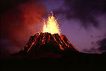

De: La Frikipedia, la enciclopedia extremadamente seria.
De: La Frikipedia, la enciclopedia extremadamente seria. De: La Frikipedia, la enciclopedia extremadamente seria.
| De la serie Países del planeta tierra: | |||||
| Yslanðya | |||||
|---|---|---|---|---|---|
| |||||
| Lema: ÐþæØŷœð | |||||
| Himno: ...
| |||||
| 
| |||||
| Capital | Rey Javi | ||||
| Mayor ciudad | Esa, ya no hay más | ||||
| Lenguas oficiales | Islandés, polaco, vikingo, MSN autóctono | ||||
| Gobierno | Democracia republicana referendumista | ||||
| Canciller Alemana | Angela Markel | ||||
| Área | no se sabe | ||||
| Población | Na' y menos | ||||
| Moneda | Coronas de rubíes | ||||
| Zona horaria | Pa' que? 6 meses de sol y 6 meses de noche | ||||
| Dominio Internet | .nop(no poblation) | ||||
| Código telefónico | +000
| ||||
| la altura engaña, pero no siempre... | |||||
<<Cuando podré ir a ver a mi primo!?>>
-Islandés al quejase de la nieve y la falta de carreteras
<<Joderrrrrr...>>
-Islandés al quejarse del frío
<<Cuando podré salir se este jodido país!?>>
-Islandés al quejarse de estar en medio de la nada un océano
<<La pala no lo arregla>>
-Islandés al ver su camino interrumpido por un rio de lava
<<Que te den, UE!>>
-Islandés al alegrarse por una vez en la vida
Islandia es, mas que un país, un trozo de tierra en medio arriba del océano atlántico. En un principio de creyó que era la base de los marcianos en la tierra, aunque luego, cuando llegaron sus destructores, estos pudieron afirmar que ese trozo había sido suyo desde siempre. Aunque digan muchas cosas buenas sobre ella, la verdad es que está peor que espiña muy al norte. Si te vas de la capital o alguno de los pueblos más importantes sin coche 4x4, y eres uno de esos que tanto ama el wasap, estas jodido. Algunas de las personas más importantes del país (las pocas que hay) son Albert Einstein, Adolf Hitler, incluso me han hablado de un tal Antonio Banderas. Una de las cosas más oportunas que han hecho en la vida, fue negarse a entrar al matadero a la UE. La otra, no leer este artículo.
Todo empezó hace tropecientosmil años a.M. (antes de matusalén), cuando se formó la tierra. Durante los años que le siguieron, en el trozo no podía vivir nada más que la nieve, (y eso que han demostrado que no tiene vida) y algo más, a lo que denominaron zarza europea. Iban ya por el siglo XII, año arriba, año abajo, cuando unos vikingos con ganas de aumentar todavía más su imperio, se fueron como si lo hiciera Cristobal Colón con un barco hecho de paja y trozos de tela. Años después, al llegar a la isla, se encontraron con los marcianos, los seres que por aquel entonces habían colonizado la isla. Nunca se ha documentado nada sobre el hecho, pero los islandeses creen que con la ayuda del trineo de Santa Claus, y unas bombas recién diseñadas (los nokia de finlandia), los nuevos pudieron cortarle las antenas a los marcianos, tirarles cerveza y hasta echarlos a patadas vikingas (llevarlos de vuelta a Marte). Tras eso, se dice que trajeron sus enfermedades locales, y por culpa de esas, hoy en día el país tiene:
Entonces, en esa posición, la gente del país nació, creció, trabajó, cobró, comió, durmió, cobró impuestos, (todos los verbos en pasado que se te ocurran también los hizo) y al final, murió. Eso hasta más o menos 1944, cuando, por arte de magia, se enteraron de que los nazis habían conquistado media Europa (exceptuando a Espiña y Rusia). Entonces, algún pensador tuvo una grandiosa idea:
<<¡Vamos a por unos burrritos en México, y de paso le pedimos ayuda a los de arriba>>
Dicho y hecho. Islandia se separó de nazilandia (aunque todavía no se me ocurre porque, no tienen ni base militar) Tras varias escaramuzas marinas con El Reino Unido de Gran Bretaña e Irlanda del Norte (vaya nombrecito) sobre quien conseguía pescar mas bacalao, llegaron al 2000.
Islandia, actualmente compuesta por granjeros, gente indignada, polacos y españoles por el mundo, fue testigo de unos banqueros semejantes a Berlusconi, los cuales inventaron una técnica muy buena para ganarse la buena cara y seguir igual:
<<Ya que mis súbditos están haciendo algo
a lo que llaman revolución de las cazuelas, podré en práctica:
EL ITALIANO GRIEGO>>
la cual cosa consistía en demostrarle al mundo sus habilidades de hacer el cubo de rubik, incitar el nacionalismo, la corrupción, también hablan del fútbol (muy popular en España), así que el proyecto ya estaba en práctica. Pero los islandeses, con sus antepasados vikingos, fueron a cortarle la cabeza al dirigente de cada banco. Como casi no hay policía, lo lograron en un pis pas. Luego, EEUU al sentirse enojado por lo que le hicieron una "sarta de vikingos sin sentido común" fueron con intenciones de acabar con cualquiera que incitase el comunismo, pero ahí estaba la OTAN, (en la cual no se porque están si ni siquiera tienen un miserable militar), así que EEUU inventó la bomba atómica, pero recordó que si la tiraba, se quedaba sin petróleo nórdico. Así que, se tuvo que joder, y en su país lo calificaron como: derrota por culpa de Rusia. Actualmente, esos bancos están abiertos, pero solo en Badajoz y canilandia, no vaya a ser que alguien se entere.
A decir verdad bastante poco cambiante, se parece al de Inglaterra, aunque por suerte la gente no es tan japuta odiosa.
Aunque en la otra página más real que esta diga que las temperaturas son agradables... REVELAROS ANTE EL MUNDO no os creáis lo que dicen. El cambio climático todavía no ha llegado, y os puedo asegurar que en invierno, las temperaturas son las mismas que las de antaño:
Os lo digo todo si poneis en Street View? A claro, y que no se os olvide mirar al cielo, evidentemente. En caso de que vuestro Internet de no de pa' tanto...
Pero la lluvia? No lo se chacho, supongo que si las nubes son negras, algún día lloverá
Aunque su bandera (la real) sea una cruz cristiana tan descarada que giras la bandera y ya la ves, tienen una gran variedad de religiones:
Si quieres residir en Islandia y pasar desapercibido en la sociedad, primero has de cambiar tu físico:
En caso de que no seas ninguno de los dos, no vayas. Te tirarán piedras por feo rechazarán seguro
Casi es inexistente. Aún así, quedan algunos núcleos de resistencia, donde el nivel de humanos, todavía es superior a 1.
Si lo ponemos en forma de esquema:
  Imperios de Europa Imperios de Europa
|
|---|
| Eslovaquia |
Autor(es):